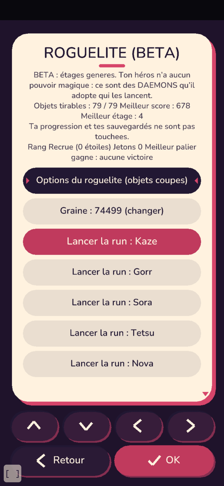
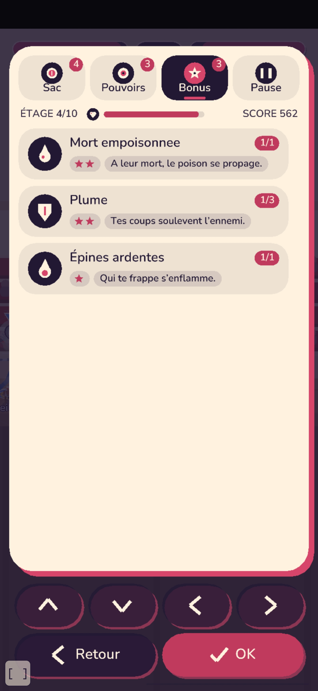
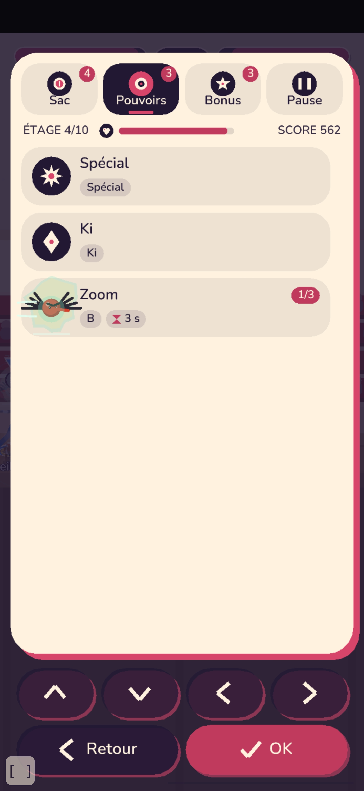
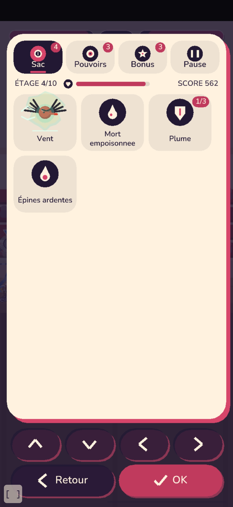
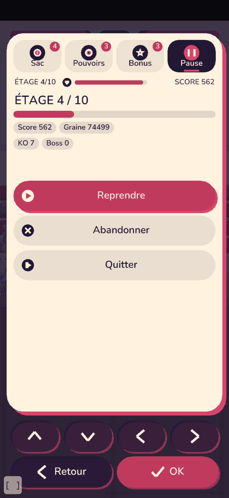

Pressions (test et lecture du code) : menu en run : voir un objet = 1 appui sur l'icone (avant : changer d'onglet + chercher ; Sac et Bonus repetaient les mêmes objets) ; quitter = 1 appui sur Quitter (avant : onglet Pause + bouton = 2) ; abandonner = 2 appuis (avant 2, mais sans protection du faux clic). Démarrer une run : 1 appui sur LANCER (avant : 1 après lecture d'un bloc BETA, avec 5 boutons « Lancer la run ») ; rejouer après la mort : 1 (avant : 1 parmi 3 libelles longs, sans changer de héros) ; changer de héros : 1 (avant : retour menu + roguelite + héros = 3).




